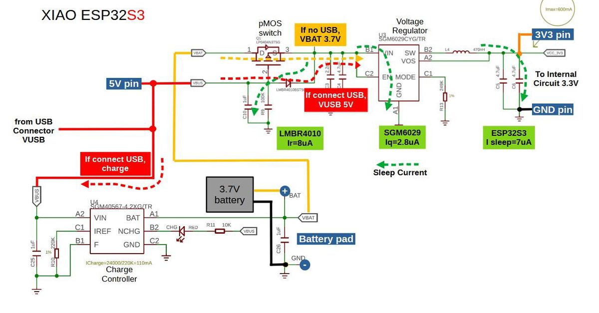
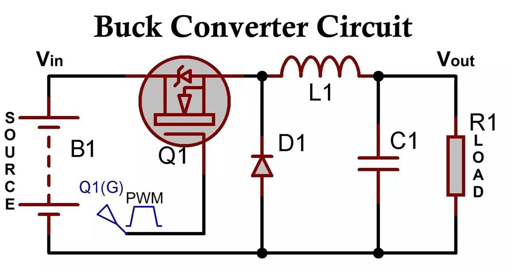
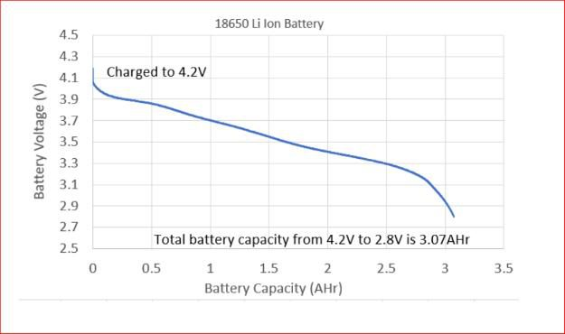
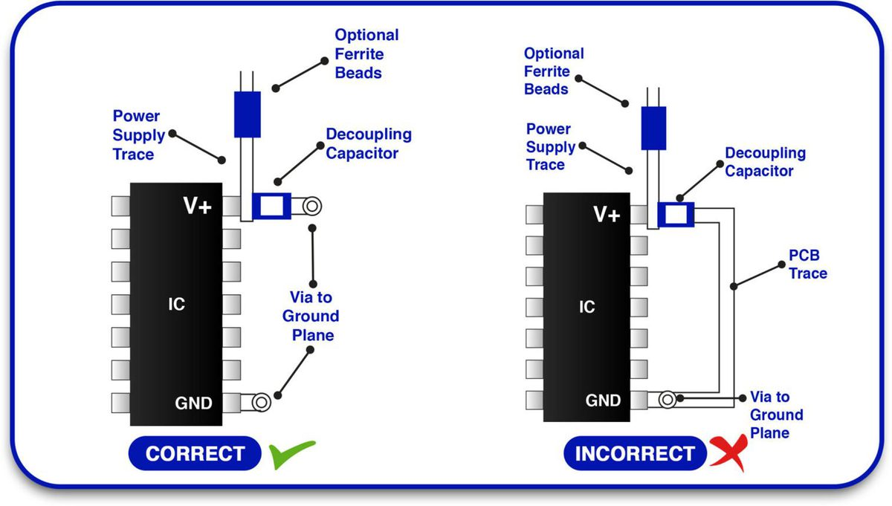
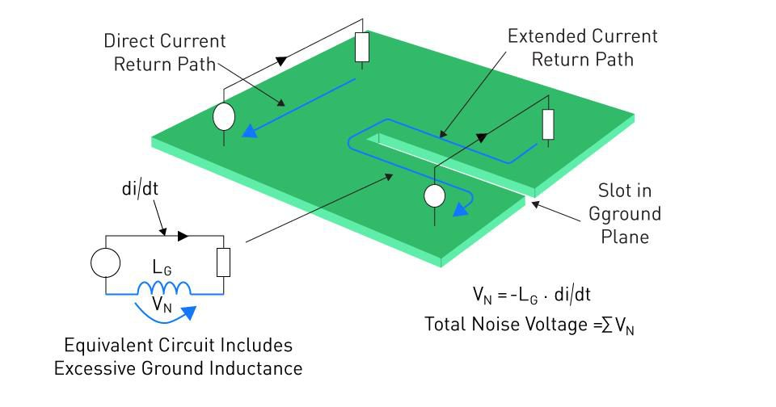
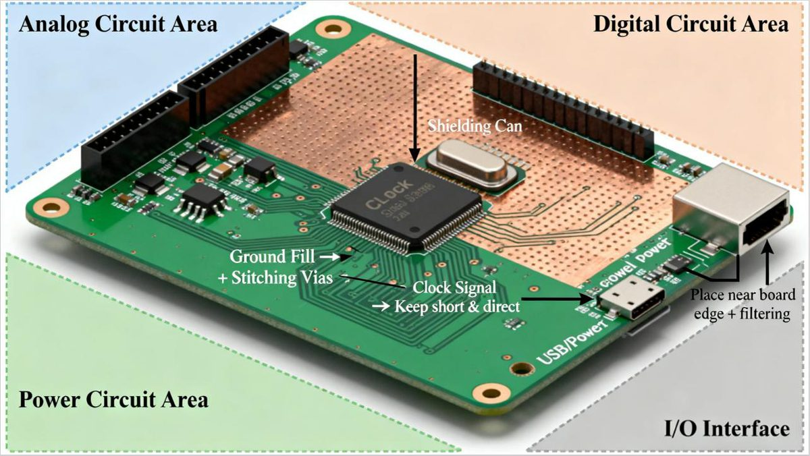
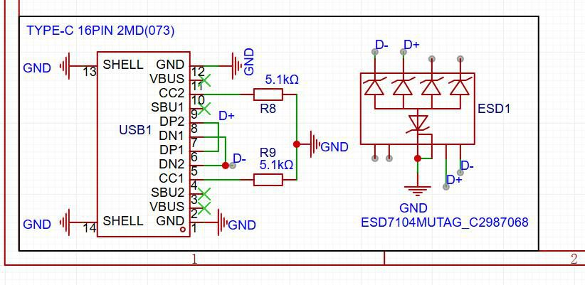
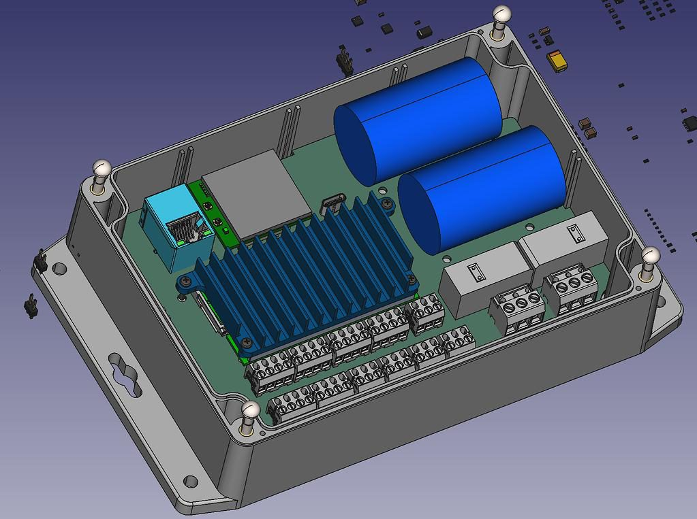
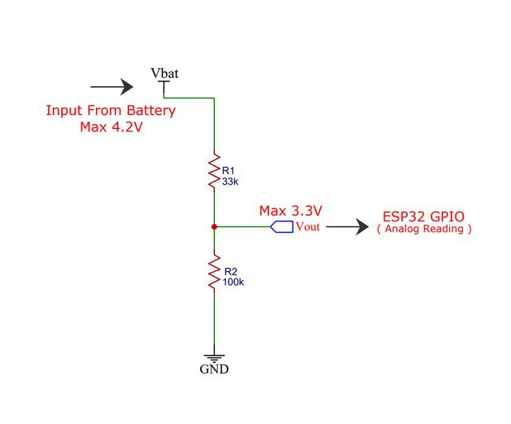

第二十二课：XIAO ESP32S3 电源系统与 PCB 设计原理
本课开始进入真正的硬件工程设计。
前面第二十一课，我们学习了 GPIO、ADC、PWM、I2C、SPI、UART 和 I2S。
现在要解决一个更基础、但也更容易导致硬件损坏的问题：
如何给 XIAO ESP32S3 设计稳定、可靠、安全的电源系统？
假设你正在设计一台智能语音终端，里面包含：
- XIAO ESP32S3 普通版；
- I2S 数字麦克风；
- 音频功放；
- 扬声器；
- OLED 显示屏；
- Wi-Fi 无线通信；
- 锂电池；
- USB 充电接口。
为什么有些设备会出现：
- Wi-Fi 发送时突然重启；
- 扬声器播放时 ESP32-S3 断电；
- ADC 读数不断跳动；
- 麦克风产生明显噪声；
- 电池明明有电，设备却无法启动；
- USB 插上后，电路板某个器件异常发热？
这些问题往往不是软件错误，而是电源设计问题。
本课将从电源原理、计算、实际电路、PCB 布局、测试和 Codex 协作六个方面展开。
一、先理解 XIAO ESP32S3 的电源结构

XIAO ESP32S3 普通版开发板可以通过 USB 等支持的供电方式工作，也提供与电源相关的接口。
首先需要区分三个概念：
| 名称 | 含义 |
|---|---|
| USB 5V / VBUS | USB 接口提供的电源 |
| 3V3 | 板载稳压后的 3.3V 电源轨 |
| BAT | 与板载电池电源电路相关的接口 |
这里有一个非常重要的区别：
XIAO ESP32S3 的 3V3 引脚不是可以随意输入 5V 的电源接口。
必须根据实际供电路径和官方电路确认允许的电压。
1. 电源系统的基本工作路径
典型电源架构
上图是理解电源系统的通用架构，不代表 XIAO 板载电路的精确拓扑。
实际设计时，应以官方原理图确认 USB、BAT、3V3、充电管理和稳压器之间的连接关系。
二、为什么 ESP32-S3 需要稳定的 3.3V 电源？
ESP32-S3 内部包含：
- 双核 CPU；
- SRAM；
- Wi-Fi 射频；
- Bluetooth LE；
- GPIO；
- ADC；
- I2S；
- SPI；
- USB 控制器。
这些模块在工作时会消耗电流。
尤其是 Wi-Fi 无线发射阶段，电流需求可能快速变化。
1. 电源电压为什么会突然下降？
假设电源输出 3.3V。
设备正常工作时：
3.3V ───────────────────当 Wi-Fi 开始发射时，瞬间电流增加。
如果稳压器响应不足、电源路径阻抗过大或电容配置不合理：
3.3V ──────\___/────────电压可能短暂下降。
当电压下降到芯片工作允许范围之外，就可能出现：
- Brownout；
- 系统复位；
- Wi-Fi 断开；
- 音频数据异常；
- 外设重新初始化。
2. 什么是 Brownout？
Brownout 是欠压检测机制。
当芯片供电电压低于设定的安全阈值时，系统可能触发欠压复位。
ESP-IDF 可以读取复位原因：
#include "esp_system.h"
#include "esp_log.h"
void print_reset_reason(void)
{
esp_reset_reason_t reason =
esp_reset_reason();
ESP_LOGI(
"POWER",
"Reset reason: %d",
(int)reason
);
}如果怀疑电源问题，应结合示波器测量电压波形，而不是只依靠软件日志。
三、LDO 稳压器：最容易理解的稳压电路
LDO 的全称是 Low Dropout Regulator，即低压差线性稳压器。
它的作用是把较高的输入电压稳定为较低的输出电压。
例如：
5V 输入
|
↓
LDO
|
↓
3.3V 输出1. LDO 的工作原理
LDO 通过内部调整元件控制输出电压。
当负载变化时，内部控制环路调整输出，使电压尽量保持稳定。
2. LDO 的功耗计算
线性稳压器的主要损耗为：
假设：
- 输入电压：5V；
- 输出电压：3.3V；
- 负载电流：300mA。
那么：
也就是说，LDO 需要消耗约 0.51W 的功率。
这部分能量主要转化为热量。
LDO 功耗示例
1.50W
0.99W
0.51W
主要以热量形式耗散3. LDO 效率
忽略静态电流时：
因此：
这意味着输入和输出之间有相当一部分能量被消耗掉了。
4. LDO 适合什么场景？
适合：
- 小电流传感器；
- 低噪声模拟电路；
- 电源电流较小的模块；
- 输入输出压差较小的场景。
但不一定适合大电流、长时间工作的电池供电系统。
四、DC-DC 降压转换器：为什么效率通常更高？
DC-DC 是开关型电源转换技术。
常见的降压转换器叫 Buck Converter。
它通过开关管、电感、电容和控制电路实现电压转换。

1. 基本工作过程
输入电压
|
↓
开关管快速开关
|
↓
电感储能与释放
|
↓
电容滤波
|
↓
稳定输出电压2. 为什么效率更高？
因为它不是简单地把多余电压转化为热量。
它通过开关和储能元件传递能量。
假设：
- 输入 5V；
- 输出 3.3V；
- 输出电流 500mA；
- 效率 90%。
输出功率：
输入功率：
损耗：
与前面 LDO 示例相比，损耗明显降低。
3. LDO 和 DC-DC 对比
| 项目 | LDO | Buck DC-DC |
|---|---|---|
| 电路复杂度 | 低 | 较高 |
| 效率 | 与压差有关 | 通常较高 |
| 发热 | 较明显 | 通常较低 |
| 输出噪声 | 通常较低 | 有开关纹波 |
| 外围元件 | 少 | 电感、电容等 |
| 适用场景 | 小电流、低噪声 | 较大功率、电池供电 |
4. 智能语音终端如何选择？
我的建议是：
- 主控供电：使用经过验证、满足瞬态电流要求的 3.3V 电源。
- 功放供电：根据功放芯片要求独立设计电源支路。
- 模拟音频：必要时增加低噪声电源滤波。
- 电池供电：优先评估 DC-DC 的效率和静态功耗。
不要认为所有模块都必须从同一个 3.3V 电源直接取电。
五、锂电池供电：单节电池的工作原理
你的智能终端如果要脱离 USB 使用，就需要电池供电。
常见方案是单节锂离子电池或锂聚合物电池。
典型参数：
| 参数 | 典型值 |
|---|---|
| 标称电压 | 3.7V |
| 满充电压 | 4.2V |
| 放电截止电压 | 依电池规格确定 |
| 电池容量 | 由产品需求决定 |
注意：不同电池化学体系和规格可能不同，必须以电池厂商数据手册为准。
1. 电池电压变化

锂电池放电过程中，电压不是恒定的。
可以粗略理解为：
满电：4.2V
正常工作：约 3.7V
低电量：电压逐渐下降
达到保护或截止条件：停止放电所以，不能简单地把电池直接连接到要求稳定 3.3V 的负载上。
2. 电池供电架构
这里的 Buck-Boost 是一种可升可降压的转换器。
它适合输入电压可能高于或低于目标输出电压的场景。
但是否需要使用，要看电池电压范围、效率和成本。
3. 充电和供电不是一回事
电池充电电路负责按照规定的充电曲线给电池充电。
电源管理电路负责给系统供电。
如果设备需要一边充电一边工作，还需要考虑 Power Path 电源路径管理。
不能简单地把一个充电芯片和一个电池接上，就认为整个系统已经具备完善的边充边用功能。
六、Wi-Fi 瞬态电流：为什么电源必须留有余量？
这是 ESP32-S3 电源设计的关键。
假设系统平时消耗 100mA。
当 Wi-Fi 发射时，负载电流可能短时间显著增加。
如果电源设计只按照平均电流计算，就可能导致电压跌落。
1. 计算电源容量
假设一个示意项目：
| 模块 | 设计电流预算 |
|---|---|
| XIAO ESP32S3 | 500mA |
| OLED | 30mA |
| I2S 麦克风 | 10mA |
| 其他传感器 | 40mA |
| 合计 | 580mA |
这里的数值是设计预算示例，不是板卡的实测电流。
如果预留 30% 设计余量：
这时就不能随意选择一个标称输出只有 500mA 的稳压器。
还要检查：
- 瞬态响应；
- 输入电压范围；
- 输出电容要求；
- 温升；
- 限流保护；
- PCB 铜箔承载能力。
2. 为什么功放要单独考虑？
假设功放在大音量播放时需要较大电流。
如果主控和功放共用一条细长的 3.3V 供电走线，就可能产生：
- 电源压降；
- 地弹噪声；
- 音频底噪；
- 主控重启。
因此建议根据实际功放芯片的供电要求设计独立的电源支路。
七、去耦电容：电源设计中最容易被忽视的元件
电容不仅用于滤波，还可以在负载电流快速变化时提供局部电荷。
例如：
3.3V 电源
|
+------ ESP32-S3
|
0.1uF
|
GND
|
10uF
|
GND这只是简化示意。
1. 为什么常见 0.1μF？
0.1μF 陶瓷电容常用于高频去耦。
它能够为芯片附近的快速电流变化提供局部电荷，并降低电源线上高频噪声。
2. 为什么还要 10μF？
较大容量的电容可以帮助处理较低频率的电源波动和负载变化。
3. 电容应该放在哪里？

核心原则：
去耦电容应尽可能靠近对应芯片的电源引脚，并形成短而低阻抗的回流路径。
不是把电容放在 PCB 上任意一个位置就能发挥相同效果。
八、PCB 电源走线：为什么走线宽度非常重要？
PCB 铜箔并不是理想导线。
它存在电阻和寄生电感。
当电流通过走线时：
如果走线太细、太长，压降和发热可能增大。
1. 走线电阻
对于一段均匀铜箔：
其中：
- ：铜的电阻率；
- ：走线长度；
- ：走线宽度；
- ：铜厚。
可以看出：
- 走线越长，电阻越大；
- 走线越宽，电阻越小；
- 铜厚越大，电阻越小。
2. 为什么大电流走线需要更宽？
假设电源支路需要承载较大的功放电流。
如果走线过细，就可能出现：
- 压降；
- 局部发热；
- 电源稳定性下降。
因此在 PCB 设计中，电源走线需要根据电流、铜厚、允许温升和走线长度进行计算。
不能只凭肉眼判断。
九、GND 地线设计：为什么所有模块都需要共同参考地？
GND 是电路中的参考电位。
假设 XIAO ESP32S3 和一个外部传感器分别使用独立电源。
如果两者需要通过普通 GPIO 进行数字通信，就必须确保信号电平具有共同参考。
典型连接：
XIAO ESP32S3 外部传感器
3.3V --------------- VCC
GPIO --------------- DATA
GND --------------- GND如果没有公共地，双方可能无法正确识别对方的高低电平。
1. 什么是地线压降？
地线也存在电阻。
当大电流通过地线时，地线两端会产生电压差：
假设：
- 电流为 1A；
- 地线等效电阻为 0.05Ω。
则：
也就是 50mV。
对于数字电路，这可能影响噪声裕量；对于音频和模拟测量，也可能产生明显干扰。
2. 什么是地弹噪声？
当功放、电机或其他大电流负载快速变化时，地线电流也会变化。
如果不同模块共用一段阻抗较大的地线，就可能导致局部地电位发生变化。
这种现象称为 Ground Bounce，也常被称为地弹。

3. 推荐的 PCB 接地方式
对于你的语音终端，建议优先考虑：
- 使用连续、完整的地平面；
- 缩短大电流回流路径；
- 功放电流不要经过主控敏感区域的狭窄地线；
- ADC 输入附近避免高噪声开关节点；
- 音频输入和功放输出合理分区；
- 不要随意切割地平面。
这里有一个重要知识：
模拟地和数字地不意味着一定要在 PCB 上物理分割。
很多情况下，连续的完整地平面比随意分割地线更可靠。
如果确实需要分区，应根据实际电流回流路径设计，而不是简单地把 AGND 和 DGND 分开后只用一根细线连接。
十、模拟电路与数字电路如何分区？
XIAO ESP32S3 的 Wi-Fi、数字时钟、USB 和高速开关电路都可能产生电磁干扰。
而麦克风、ADC 和音频模拟输入通常对噪声比较敏感。
所以 PCB 应当合理分区。

1. 推荐的功能分区
智能语音终端 PCB 分区示意
2. 麦克风为什么应该远离功放？
功放输出可能存在较大的电流变化。
扬声器线缆也可能产生电磁干扰。
如果麦克风输入电路靠近功放输出走线，就可能出现：
- 音频底噪；
- 电源噪声；
- 啸叫；
- 高频干扰；
- 信号失真。
建议：
- 麦克风尽量靠近设备的声音入口。
- 麦克风信号线尽量短。
- 功放与麦克风输入保持合理距离。
- 扬声器输出走线避免穿越敏感模拟输入区域。
- 功放电源和回流路径尽量靠近功放自身。
对于数字 I2S 麦克风，还需要考虑 BCLK 和数据线的串扰、时钟边沿以及信号完整性。
十一、USB 接口保护：为什么外部接口需要 ESD 防护？
XIAO ESP32S3 使用 USB 接口进行供电、下载和通信。
如果未来设计自己的外围 PCB，可能还会引出：
- USB-C；
- UART；
- 外部按键；
- 音频接口；
- 传感器接口。
这些接口都有可能接触外部环境。
静电放电可能直接损坏芯片或导致设备异常。
1. ESD 保护电路

对于 USB 数据线，通常可以考虑专用低电容 ESD 保护器件。
对于外部 GPIO 接口，则应根据电压范围、信号速度和接口环境选择保护方案。
2. ESD 器件应该放在哪里？
基本原则：
尽量靠近外部连接器放置。
原因是静电应当在进入 PCB 内部敏感电路之前被泄放。
布局时还应注意：
- ESD 器件到连接器的走线尽量短；
- 接地回路低阻抗；
- 避免保护器件接地过孔过远；
- 高速 USB 信号线保持合理阻抗和对称性；
- 避免形成过长的支路。
3. USB-C 接口还有什么需要注意？
USB-C 不仅仅是一个插座。
还涉及：
- CC1、CC2；
- VBUS；
- GND；
- D+、D-；
- 屏蔽层；
- 电源输入保护。
如果设计 USB-C 供电接口，还必须考虑正确的 Type-C 电源角色配置。
不能简单地认为只要连接了 USB-C 的 5V 和 GND，就完成了所有接口设计。
十二、PCB 电源布局：从原理图进入实际板子
前面讲了电源、去耦和接地，现在把这些原则落实到 PCB。
1. 一个推荐的布局顺序
2. 两层 PCB 还是四层 PCB？
| 对比 | 两层 PCB | 四层 PCB |
|---|---|---|
| 制造成本 | 较低 | 较高 |
| 设计难度 | 较低 | 中等 |
| 地平面完整性 | 较难保持 | 更容易 |
| 电源完整性 | 需要精心布线 | 更容易优化 |
| 高速信号 | 设计空间有限 | 通常更有优势 |
| 适合场景 | 简单外围电路 | 复杂、高密度设计 |
对于初期的 XIAO ESP32S3 外围扩展板，可以优先考虑两层 PCB。
但如果同时包含：
- Wi-Fi 主控；
- 音频功放；
- 电源转换；
- USB 高速信号；
- 多种外部接口；
那么四层板也值得评估。
3. 四层板的典型叠层
四层 PCB 叠层示意
注意：这只是常见的四层板参考结构，实际叠层、阻抗、铜厚和介质材料要与 PCB 制造商确认。
十三、FreeCAD、KiCad 与 Codex 如何协同？
这部分与你之前的 PCB 外壳设计项目直接相关。
我建议将工具职责明确分开。

推荐协同流程
硬件需求
↓
KiCad 原理图
↓
ERC 检查
↓
PCB 元件布局
↓
PCB 布线
↓
DRC 检查
↓
导出 STEP / 3D 模型
↓
FreeCAD 外壳装配
↓
检查接口、卡扣、散热和尺寸
↓
修改 PCB 或外壳
↓
最终制造需要特别强调：
Codex 可以协助生成和修改设计文件，但不能代替电气规则检查、真实器件数据手册核对和 PCB 实物测试。
十四、针对你的 XIAO ESP32S3 智能终端，推荐的电源设计思路
假设目标设备包括：
- 普通版 XIAO ESP32S3；
- I2S 麦克风；
- I2S 功放；
- OLED；
- 单节锂电池；
- USB-C 充电接口。
建议把电源设计拆成以下几个独立功能区。
智能终端电源架构
这里需要注意：
如果直接使用 XIAO 开发板的 BAT 接口和板载电源管理电路，就必须遵守官方规定的连接方式。
不能再额外并联一个充电电路，或者同时从多个电源点向板载电源轨反向供电，除非已经明确验证其供电路径和防倒灌设计。
十五、电池电量检测：如何让设备知道还剩多少电？
如果设备采用锂电池供电，就需要检测电池状态。
最简单的方法是 ADC 测量电池电压。
1. 电阻分压原理
假设电池电压最高为 4.2V，而 ADC 输入不能超过允许范围。
可以使用电阻分压：

电压计算：
假设：
- R1 = 100kΩ；
- R2 = 100kΩ；
- 电池电压 = 4.2V。
则：
ADC 可以在满足其输入范围的前提下测量这个电压。
2. 为什么不能简单地用电压判断电量？
锂电池的电压与剩余容量并不是严格线性关系。
例如：
4.2V ≠ 100% 电量
3.7V ≠ 精确的 50% 电量
3.3V ≠ 精确的 0% 电量实际电量还受到：
- 电池化学特性；
- 温度；
- 放电电流；
- 电池老化；
- 内阻；
- 静置时间；
影响。
3. 更专业的方式：Fuel Gauge
如果产品需要准确显示剩余电量，可以使用专用电量计芯片。
例如：
- MAX17048；
- MAX17049；
- 其他适合目标电池的 Fuel Gauge。
这类芯片通常可以通过 I2C 与 XIAO ESP32S3 通信。
但具体型号要结合电池、供电结构、采购渠道和数据手册选型。
十六、PCB 热设计：为什么电源芯片会发热？
电源设计不仅要看电气参数，还要看温度。
假设一个 LDO 损耗为 0.5W。
如果 PCB 面积很小，散热铜面积不足，芯片温度可能明显上升。
1. 温升基本原理
其中：
- ：芯片结温；
- ：环境温度；
- ：功耗；
- ：结到环境的热阻。
假设：
- 环境温度 25℃；
- 功耗 0.5W；
- 热阻 100℃/W。
那么：
这是简化的估算，真实温度需要结合芯片封装、PCB 铜面积、过孔、气流和外壳条件分析。
2. 3D 打印外壳为什么也要考虑？
你的设备采用 3D 打印外壳。
这意味着还需要考虑：
- 外壳材料导热能力；
- PCB 与外壳之间的空气间隙；
- 电源芯片周围的散热空间；
- 扬声器和功放的位置；
- 长时间 Wi-Fi 工作产生的热量；
- 外壳内部热量积累。
建议后续在 FreeCAD 中将电源芯片、功放和主要热源标记为独立的热设计区域。
但不要仅靠外壳模型推测芯片温度，最终仍需要实物温度测试。
十七、电源调试：如何确认你的电路设计正确？
完成电路设计后，不能直接连接所有模块然后上电。
建议采用分阶段测试。
第一步：检查电路是否短路
使用万用表测量：
- 3.3V 与 GND；
- 5V 与 GND；
- BAT 与 GND。
检查是否存在异常低阻或明显短路。
电容充电可能造成电阻读数变化，因此不能只根据一次蜂鸣器提示判断电路短路。
第二步：检查空载电压
在没有连接主控负载的条件下，按照电路设计测试：
| 测量位置 | 检查内容 |
|---|---|
| USB 输入 | 输入电压 |
| 稳压器输入 | 输入是否正常 |
| 稳压器输出 | 是否达到设计值 |
| 功放电源 | 是否符合芯片规格 |
| 电池接口 | 极性和电压 |
第三步：逐步增加负载
建议顺序：
- 单独测试稳压器。
- 连接 XIAO ESP32S3。
- 连接 OLED。
- 连接麦克风。
- 连接功放。
- 最后测试 Wi-Fi 和最大音量。
第四步：测量瞬态波形
使用示波器观察：
- Wi-Fi 发射时的 3.3V 电压；
- 功放启动时的电源波动；
- 扬声器大音量播放时的电源噪声；
- USB 插拔时的电源变化。
这一步非常重要，因为万用表通常无法准确捕捉微秒或毫秒级的瞬态电压跌落。
第五步：进行长时间测试
建议至少覆盖：
- Wi-Fi 持续连接；
- 音频持续播放；
- 音频采集；
- USB 供电；
- 电池供电；
- 充电过程中运行；
- 高温环境下运行。
还需要确认是否存在异常发热、意外重启和电池保护触发。
十八、第二十二课综合实战：建立 XIAO ESP32S3 电源设计实验室
建议在现有项目仓库中增加：
XIAO-ESP32S3-Projects/
└── projects/
└── power_design_lab/
├── docs/
│ ├── power_architecture.md
│ ├── battery_design.md
│ ├── ldo_vs_buck.md
│ ├── capacitor_selection.md
│ ├── grounding_guide.md
│ ├── pcb_power_layout.md
│ └── power_test_plan.md
│
├── hardware/
│ ├── power_schematic/
│ ├── battery_circuit/
│ ├── usb_protection/
│ └── pcb/
│
├── measurements/
│ ├── voltage_test.csv
│ ├── current_test.csv
│ └── thermal_test.csv
│
└── README.md实验验收标准
| 实验 | 验收目标 |
|---|---|
| LDO 实验 | 测量输入输出和温升 |
| DC-DC 实验 | 测量转换效率和纹波 |
| 电池实验 | 确认充放电路径 |
| 电量检测 | ADC 读取电池电压 |
| 去耦实验 | 观察电源瞬态变化 |
| 地线实验 | 分析不同回流路径 |
| USB 保护 | 核对接口保护方案 |
| PCB 实验 | 完成电源布局与 DRC |
| 热设计 | 测量主要芯片温度 |
十九、给 Codex 的第二十二课实践任务
- 检查普通版 XIAO ESP32S3 官方电源原理图。
- 梳理 USB、BAT、3V3 的实际供电关系。
- 建立 LDO 与 DC-DC 计算工具。
- 建立单节锂电池供电设计文档。
- 建立充电和 Power Path 方案比较。
- 建立电阻分压电池检测计算工具。
- 建立去耦电容选型指南。
- 建立 PCB 电源与地平面设计规范。
- 建立 USB ESD 保护方案。
- 建立功放与主控电源分区方案。
- 建立温升和电流测试记录模板。
- 整理 FreeCAD 与 KiCad 的协同接口。
二十、第二十二课学习验收
二十一、下一课：XIAO ESP32S3 原理图设计与 KiCad 实战
第二十三课：从零开始设计自己的 XIAO ESP32S3 扩展 PCB
下一课开始，我们不再只讲单个电路原理，而是进入完整的 PCB 工程流程。
具体学习：
- KiCad 工程结构。
- 原理图编辑器。
- XIAO ESP32S3 模块符号。
- 官方引脚映射导入。
- 元器件符号和封装。
- 连接器和接口设计。
- 原理图网络标号。
- ERC 电气规则检查。
- PCB 元件布局。
- 两层 PCB 布线。
- 电源与地平面。
- DRC 设计规则检查。
- Gerber 制造文件。
- STEP 三维模型导出。
- FreeCAD 外壳装配。
- PCB 打样和实物测试。
特别是下一课，我们将围绕一个实际目标展开：
设计一块能够与普通版 XIAO ESP32S3 配合使用的智能语音终端扩展 PCB，并且能够与 FreeCAD 中的 3D 打印外壳准确装配。
官方参考资料：
第二十二课最重要的结论：
电源系统不是简单地把 5V 转成 3.3V。它涉及瞬态电流、稳压效率、电池管理、地线回流、去耦、散热和 PCB 布局。
这些设计直接决定 XIAO ESP32S3 产品能否稳定运行，尤其是 Wi-Fi、音频和电池供电同时工作的场景。